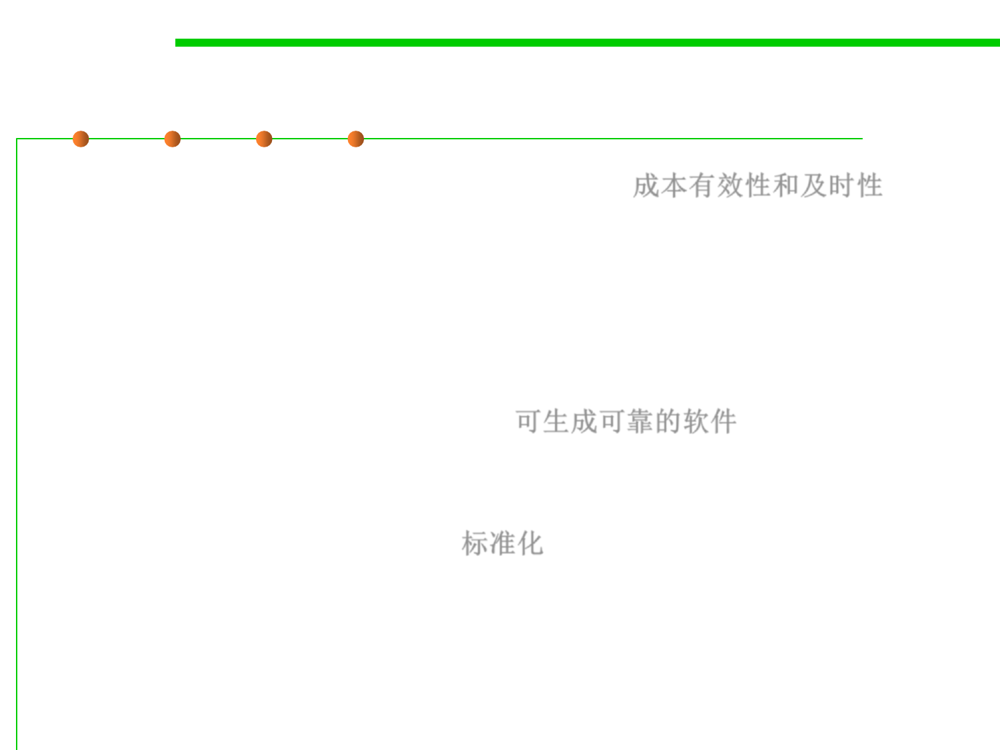

Why reuse?
5.1 Metrics, Morphology and External Observations of Reusability
▪ Reuse is cost-effective and with timeliness 成本有效性和及时性
– Increases software productivity by shortening software production cycle
time (software developed faster and with fewer people)
– Does not waste resources to needlessly "reinvent-the-wheel"
– Reduces cost in maintenance (better quality, more reliable and efficient
software can be produced)
▪ Reuse produces reliable software 可生成可靠的软件
– Reusing functionality that has been around for a while and is debugged is
a foundation for building on stable subsystems
▪ Reuse yields standardization 标准化
– Reuse of GUI libraries produces common look-and-feel in applications.
– Consistency with regular, coherent design.